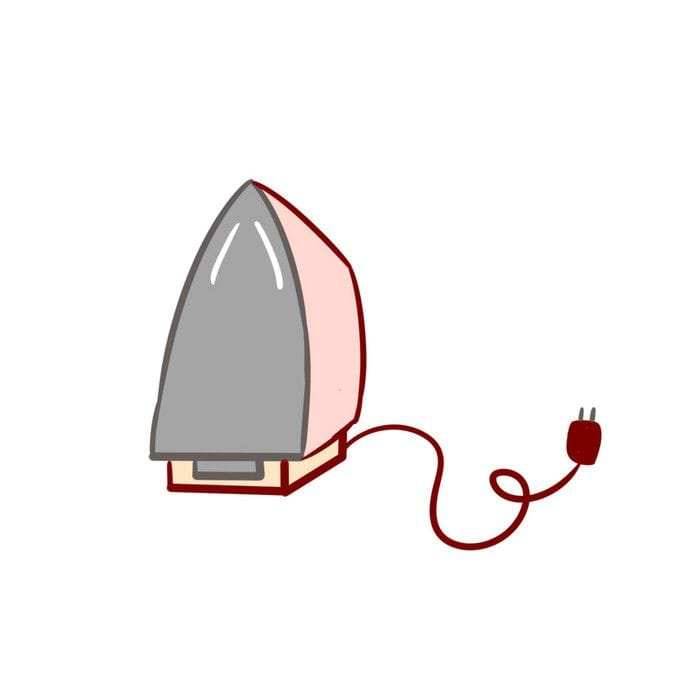
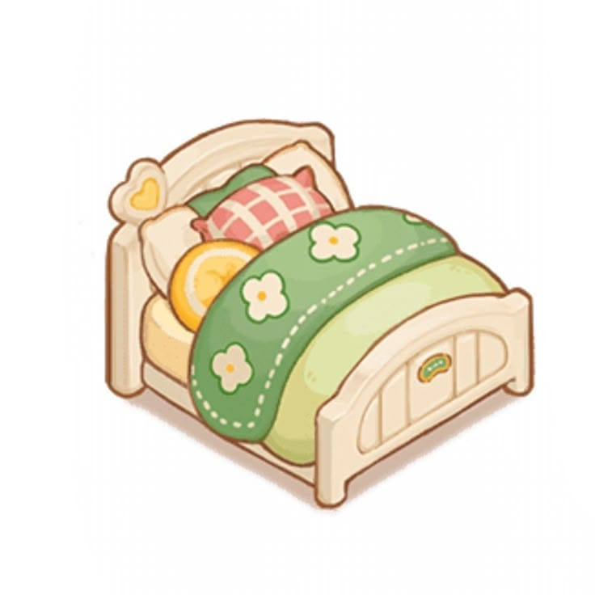

Kiloan
Cuci Kiloan Reguler
Dicuci, dikeringkan, dan dilipat. Selesai dalam 2 hari.
Rp10.000 / kg
Pilih layanan sesuai kebutuhan Anda
Dicuci, dikeringkan, dan dilipat. Selesai dalam 2 hari.
Rp10.000 / kg

Cuci dan setrika selesai dalam 6 jam untuk kebutuhan mendesak.
Rp15.000 / kg

Pakaian sudah bersih? Kami bantu setrika sampai licin dan rapi.
Rp10.000 / kg

Bedcover dan selimut tebal bersih, lembut, dan bebas tungau.
Rp40.000 / pcs

Dibersihkan dengan sikat lembut dan sabun khusus, aman untuk berbagai bahan.
Rp35.000 / pasang
Perawatan khusus untuk jas, blazer, dan gaun agar tetap rapi.
Rp50.000 / pcs
Ringkasan harga dan estimasi waktu pengerjaan.
| Layanan | Satuan | Estimasi | Harga |
|---|---|---|---|
| Cuci Kiloan Reguler | kg | 2 hari | Rp10.000 |
| Cuci Setrika Express | kg | 6 jam | Rp15.000 |
| Setrika Saja | kg | 1 hari | Rp10.000 |
| Cuci Bedcover & Selimut | pcs | 3 hari | Rp30.000 |
| Cuci Sepatu | pasang | 3 hari | Rp35.000 |
| Dry Cleaning Jas | pcs | 3 hari | Rp40.000 |